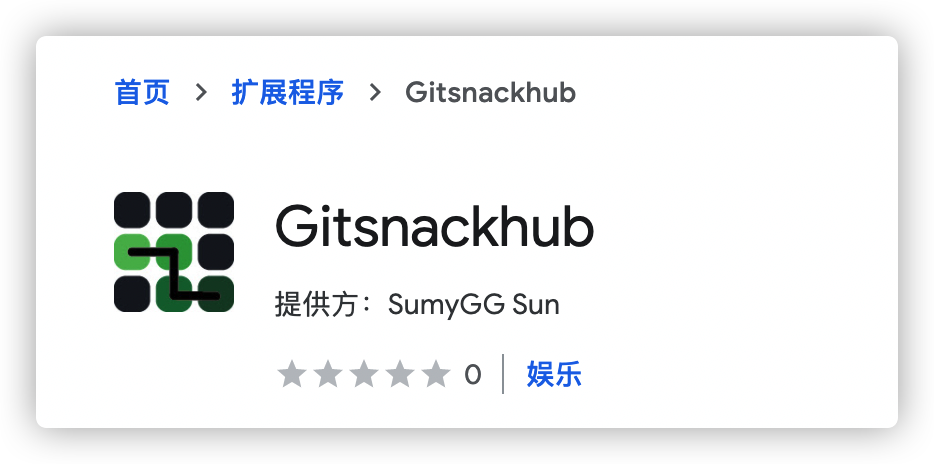
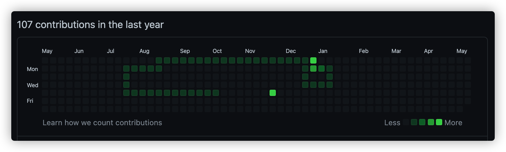
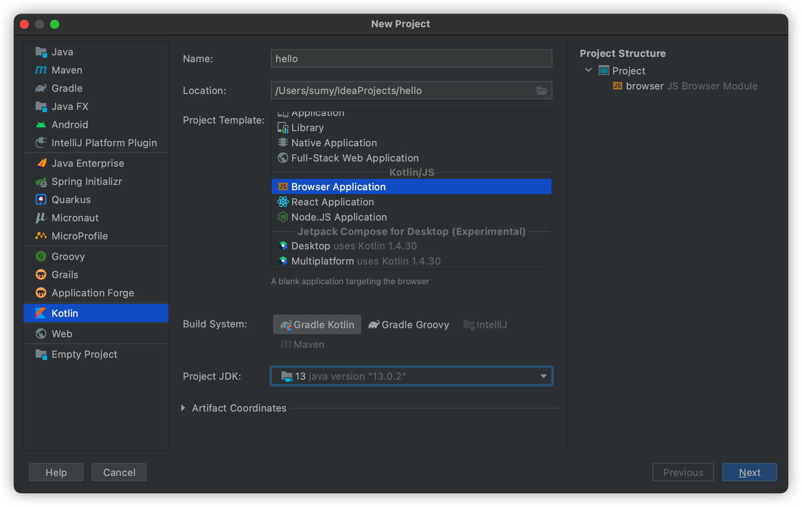
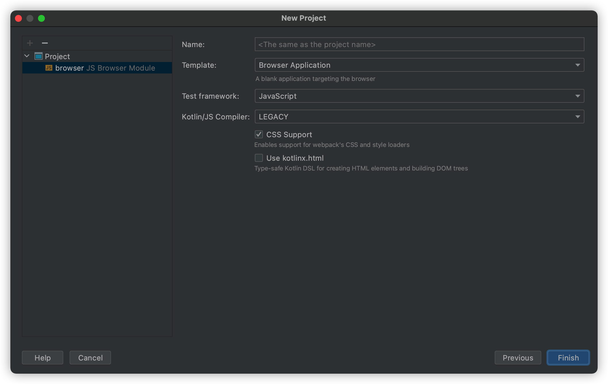
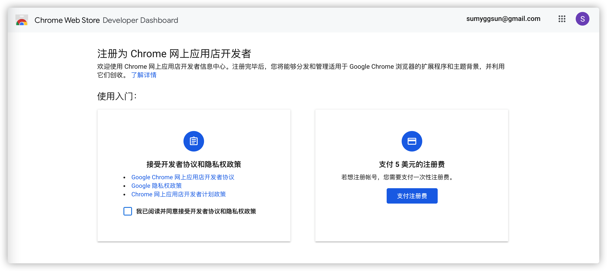

在Github上玩贪吃蛇游戏吧
说好不想再挖坑的，结果还是没有控制住自己，结果又开了一个新坑，明明有那么多的坑已经填不完了。。。这次玩点不一样的内容，写一个贪吃蛇游戏吧。但是也不能仅仅是一个贪吃蛇游戏，还想在其中增加些不一样的内容。Kotlin跨平台开发出来好久了，这次就体验一下Kotlin2JS的能力。另一方面，只做一个贪吃蛇游戏没有什么意思，最近经常逛Github，看到贡献墙眼前一亮，为什么不在这里进行游戏呢？将自己的代码逻辑嵌入网站，还是做成一个扩展比较方便。于是就打算按照扩展的模式开发。
本文的重点不在于贪吃蛇游戏逻辑的实现，在于感受Kotlin跨端开发的体验和最后扩展上线的流程。
项目概览
贪吃蛇游戏的名称叫 gitsnackhub，其实简单来说就是在github的中间插入了snack的英文。
图标也是仿照Github贡献墙的配色，在其中画出贪吃蛇的形状。

最终游戏的呈现方式，代码已开源到Github，欢迎进行指导。

创建跨平台项目
使用IntelliJ IDEA可以创建Kotlin/JS类型的项目。
- 打开Intellij IDEA，新建一个新的项目。
- 项目类型选择 Kotlin。
- 输入项目名称后，选择 Browser Application 项目，点击下一步
 - 保持默认配置，选择完成项目。

开发过程体验
项目创建完成后，会出现 build.gradle.kts 配置文件，其中包含 kotlin("js") 的插件和其它依赖。
KotlinJs相对于普通的JavaScript项目而言，其内部也是通过webpack进行的构建，但是各种配置都通过js插件整合到gradle配置中。
npm依赖与webpack配置
如果想增加npm依赖包，可以在Gradle中通过配置引入：
1 | dependencies { |
不要忘记Kotlin是一个类型安全语言，要使用引入包中的函数，还要通过external的方式将函数声明导出。期望以后能够通过types文件直接导出函数声明。
当然也可以在Gradle中配置一些webpack配置项，例如将输出项从默认的umd改为commonjs2：
1 | webpackTask { |
以上配置可以在Kotlin的教程中查看，https://kotlinlang.org/docs/js-project-setup.html#webpack-bundling
KotlinJS的构建过程是，先将kotlin代码转换成JavaScript代码，然后生成webpack配置，基于webpack构建和打包生成最后代码。
类型安全
使用Kotlin开发JavaScript最大的感受就是类型安全，虽然类型安全能够在编译阶段发现问题，但是相对于JavaScript这种动态语言来说，就丧失了很多动态性。
例如通过document.querySelector()可以获取到指定的元素，这个方法会类型为Element?的对象。要想获取对应的属性值，根据查询到的DOM类型，将这个Element父类强制转换成我们需要的对象类型。例如查询<rect>标签需要将其当做SVGRectElement类型进行处理。
在JavaScript中，DOM对象作为一个普通的对象，可以以对象的方式在其中增加修改对象属性。但是在Kotlin中，一个对象中含有的属性是固定的，很难进行增加属性的操作。
动态语言支持
为了支持JavaScript的动态语言的特性，Kotlin在语言层面也做了一些改变。
增加dynamic类型，表示这个类型是一个动态类型。针对动态类型Kotlin编译器有一些特权操作，动态类型可以代表任何值，编译器会跳过类型检查，你可以用任意参数调用动态类型的任意方法（包括不存在的方法）。
还可以在Kotlin中直接书写JavaScript代码，使用js()函数可以以字符串方式执行一段JavaScript代码，类似于eval()函数。该函数的返回值类型也是dynamic类型的。
扩展的基本结构
扩展能够使用的表现模式有好多种：
- 点击图标弹出一个浮窗
- 右键菜单
- 嵌入式脚本
- devtools插件
- 后台进程
这些类型的具体功能可以查阅相关的资料。扩展需要引用的资源和使用的权限通过一个叫 manifest.json 的文件控制。
gitsnackhub通过将脚本注入到github个人信息页的方式，实现操控页面的逻辑。这里就使用了扩展的嵌入式的方式。
1 | { |
content_scripts 的作用是会将其指定的css和js文件，在 matches 匹配后，插入到页面中。gitsnackhub只用到了js文件，并打算将其插入到github的域名中。
上架扩展
为了让用户方便的下载到你的扩展，最好的方式就是上架到Chrome Web Store应用商店里。
第一次上架需要消费5$激活开发者账号。打开https://chrome.google.com/webstore/devconsole，第一次会提示以下内容：

这里的支付可以国内的visa信用卡，注意账单地址需要填写一个地图上真实的账单地址。
注册完成后，新建一个新内容，上传打包好的扩展压缩zip包。第一次上架填写的内容比较多，需要注意以下项目的填写：
- 扩展说明，需要详细说明扩展的使用方式，不要直接复制manifest.json中的摘要信息，会被驳回
- 商店图标，注意尺寸
- 截图，注意尺寸
- 单一用途，描述扩展的单一用途
- 请求权限，需要描述所有你扩展声明的权限，并说明必要原因
截止目前，我的扩展还没有审核通过。审核频率大概1天1次。第一次因为扩展描述太随便而被驳回。重新修改提交审核即可。
终于，扩展审核通过了，Gitsnackhub - Chrome 网上应用店。找了位勇士试用了一下，后面再慢慢把一些细节优化一下。